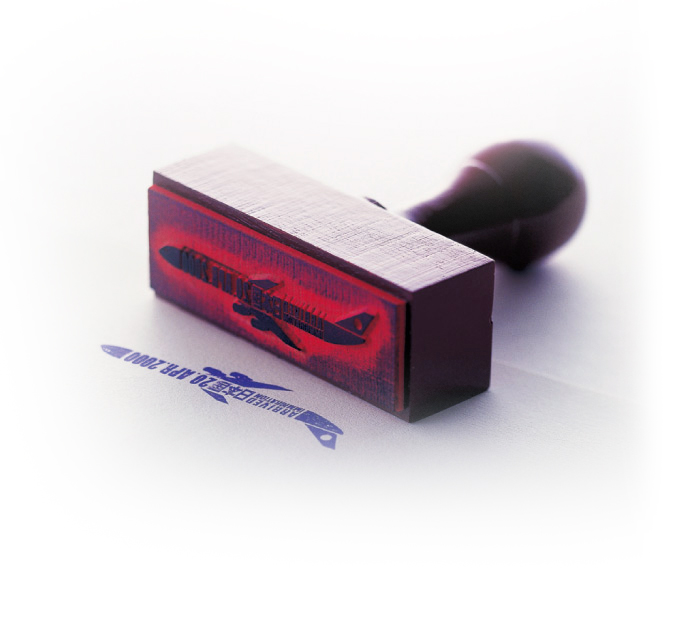
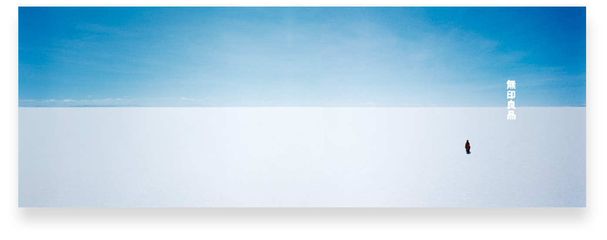

Design
디자인
하라켄야의 디자인을 자세히 들여다보면, 그곳엔 사람이 있다. 보기 좋은 디자인 대신 ‘기분 좋은 상태’를 추구하고, 몸의 감각을 익히고 써보길 권유한다.
그가 생각하는 디자인은 예술가가 아닌 모든 사람이 익혀야 할 감각이다.
RE DESIGN
2000

2000년 기획한 <리디자인: 일상의 21세기>전에 선보인 디자인은 다양한 분야에서 활동
하는 32명의 디자이너에게 일상의 제품을 다시 디자인하게 했다. 오랜 시간 동안 다듬어
져 온 ‘일용품’을 새롭게 해석함으로써 드러나는 ‘생각의 차이’를 통해 디자인의 의미를
발견하고자 했다.
하라켄야는 1990년대에 ‘리디자인’ 개념에 빠져 있었고, 새 천년이 시작되던 해에 지류
회사인 다케오 창사 100주 년 기념 전시를 기획하게 된다. 당시 32명의 작가에게 각자 일
상용품을 다시 디자인해 달라고 요청했다. 대표적인 예로 건축가 반 시게루의 사각형 화
장지, 아트디렉터 사토 마사히코의 출입국 스탬프, 라이팅 디자이너 멘데 가오루의 성냥
등이 있다.
하는 32명의 디자이너에게 일상의 제품을 다시 디자인하게 했다. 오랜 시간 동안 다듬어
져 온 ‘일용품’을 새롭게 해석함으로써 드러나는 ‘생각의 차이’를 통해 디자인의 의미를
발견하고자 했다.
하라켄야는 1990년대에 ‘리디자인’ 개념에 빠져 있었고, 새 천년이 시작되던 해에 지류
회사인 다케오 창사 100주 년 기념 전시를 기획하게 된다. 당시 32명의 작가에게 각자 일
상용품을 다시 디자인해 달라고 요청했다. 대표적인 예로 건축가 반 시게루의 사각형 화
장지, 아트디렉터 사토 마사히코의 출입국 스탬프, 라이팅 디자이너 멘데 가오루의 성냥
등이 있다.

광고・영화감독 사토 마사히코(佐藤 雅彦)의 출입국 스탬프. 비행기 방향을
반대로 해 출국과 입국을 표현한 것으로 일본을 방문하는 하루 평균 5만
명의 외국인에게 ‘일본인들이 재미있는 생각을 했구나’라는 긍정적인 인
식을 심어줄 수 있다.
반대로 해 출국과 입국을 표현한 것으로 일본을 방문하는 하루 평균 5만
명의 외국인에게 ‘일본인들이 재미있는 생각을 했구나’라는 긍정적인 인
식을 심어줄 수 있다.
건축가 반 시게루(坂茂)의 화장지. 사각형 종이 심은 종이를 잡아당길 때
달그락거리며 걸리게 돼 있어 동그란 심에 비해 휴지를 절약할 수 있고 운
반 시 공간 효율성을 높일 수 있다.
달그락거리며 걸리게 돼 있어 동그란 심에 비해 휴지를 절약할 수 있고 운
반 시 공간 효율성을 높일 수 있다.
조명 디자이너 멘데 카오루(面出薫)의 성냥. 땅에 떨어진 나뭇가지 끝에
발화제를 입힌 것으로, 지구로 환원되기 전 마지막 일을 시켜 보자는 발상
을 담았다.
발화제를 입힌 것으로, 지구로 환원되기 전 마지막 일을 시켜 보자는 발상
을 담았다.
Programs for the Opening and Closing
Ceremonys of the Nagano Winter Olympic Games
Ceremonys of the Nagano Winter Olympic Games
1998
이른 아침, 밤새 내린 눈밭 위를 걷던 설렘을 누구나 간직하고 있다. 전 세계로부터 일본
에 오는 손님들에게 ‘눈을 밟던 기억을 되살린다’는 느낌을 주고자 했다. 특별 가공한 푹
신푹신한 흰색 종 이에 압력을 가해 누르면 반투명한 종이가 드러나는 데, 이는 마치 눈
밑에 나타난 얼음의 느낌을 준다. 그리고 그 위에 더해진 광택 소재의 활활 타오르는 불꽃
은 ‘눈과 얼음의 종이’를 완성시킨다.
일본 전통을 바탕으로 현대적인 그래픽을 적용했다. 올림픽이라는 국제 행사를 찾은 선
수, 관객, 관계자에게 ‘눈을 밟은 기억’을 되살리고자 제지회사와 종이를 개발했다. 팸플
릿의 소재는 푹신 한 흰색 종이로 쓰고, 표지에 배치한 문자는 모두 요철로 눌러 표현
하는 디보스 기법으로 가공했다.
에 오는 손님들에게 ‘눈을 밟던 기억을 되살린다’는 느낌을 주고자 했다. 특별 가공한 푹
신푹신한 흰색 종 이에 압력을 가해 누르면 반투명한 종이가 드러나는 데, 이는 마치 눈
밑에 나타난 얼음의 느낌을 준다. 그리고 그 위에 더해진 광택 소재의 활활 타오르는 불꽃
은 ‘눈과 얼음의 종이’를 완성시킨다.
일본 전통을 바탕으로 현대적인 그래픽을 적용했다. 올림픽이라는 국제 행사를 찾은 선
수, 관객, 관계자에게 ‘눈을 밟은 기억’을 되살리고자 제지회사와 종이를 개발했다. 팸플
릿의 소재는 푹신 한 흰색 종이로 쓰고, 표지에 배치한 문자는 모두 요철로 눌러 표현
하는 디보스 기법으로 가공했다.


MUJI corporate advertising
1998

넓은 지평선을 배경으로 비워진 ‘공’의 개념을 통해 간결함 속에 충만한 삶에 대한 메시지를 던진 무인양품 광고 캠페인.
하라켄야가 광고 캠페인의 디렉터를 담당했다.
하라켄야가 광고 캠페인의 디렉터를 담당했다.
무인양품의 광고는 가능한한 메시지를 드러내지 않는다. ‘무인양품’이라는 로고 자체가 모든 의미를 포함하
기 때문에 그것을 담을 수 있는 그릇만을 표현한다. 5~6명의 인하우스 디자이너가 있는데 사원 모집 문구
는 ‘디자인하지 않은 디자이너 모집’이다. 무인양품의 카피라이터는 ‘시’를 죽여야 하고, 디자이너는 ‘디자
인’을 죽여야만 한다. 그래야 무인양품의 디자인이 성립되기 때문이다.
기 때문에 그것을 담을 수 있는 그릇만을 표현한다. 5~6명의 인하우스 디자이너가 있는데 사원 모집 문구
는 ‘디자인하지 않은 디자이너 모집’이다. 무인양품의 카피라이터는 ‘시’를 죽여야 하고, 디자이너는 ‘디자
인’을 죽여야만 한다. 그래야 무인양품의 디자인이 성립되기 때문이다.